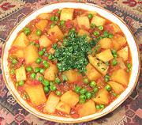

|
Potatoes & PeasIndia, North - Alu Matar | ||||
| Serves: Effort: Sched: DoAhead: |
2 main *** 1 hrs Yes |
Very popular in northern India, this dish goes well with hot chapatis or similar breads - but I serve it with basmati rice which I have on hand, and it works fine, but see also Comments. | |||
|
1 12 1-1/2 6 2 ------ 1/2 1/4 1/4 1/2 ------ 3 1 1/2 ----- |
# oz c oz cl --- t t t t --- T c t -- |
Potatoes (1) Tomatoes, ripe Green Peas (2) Onion Garlic -- Spicing Coriander seeds Turmeric Garam Masala (3) Salt --------- Oil or ghee (4) Water Chili powder (5) -- Garnish Cilantro leaves |
PREP - (15 minutes)
|
imv_potatopea1 090407 foi82 - www.clovegarden.com
©Andrew Grygus - agryg@aaxnet.com - Linking to and
non-commercial use of this page is permitted.